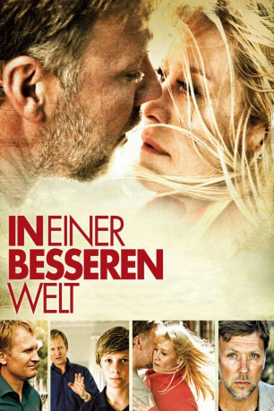

Auszeichnungen: 1 Oscars gewonnen 1 GoldenGlobes gewonnen
 gesehen am 25.01.2016
gesehen am 25.01.2016Alternativ: In a Better World (Englischer Titel)
Auszeichnungen: 1 Oscars gewonnen 1 GoldenGlobes gewonnen gesehen am 25.01.2016
 
 IMDB-Wertung: 7.6 / 10
IMDB-Wertung: 7.6 / 10  Metascore:
Metascore: 
Elias wird in der Schule gemobbt, erst die Freundschaft mit dem neuen durchsetzungsfähigen Schulkameraden Christian, der ihn vor den Attacken beschützt, holt ihn aus der Isolation. In der Ehe von Elias' Eltern kriselt es, der Vater arbeitet lange in Afrika. Christian wirft seinem Vater den Tod der Mutter vor und spricht nicht mit ihm. Als Elias sieht, wie sein Daddy geohrfeigt wird und den Konflikt vermeidet, packt ihn der Zorn. Mit seinem Freund heckt er einen gefährlichen Racheplan mit einer selbst gebastelten Bombe aus.
Jahr: 2010
Dauer: 117 Minuten
FSK: 12
Land: Dänemark Studio: UFATonspuren:
Untertitel:
Auflösung: 1080p (1920x816) Größe: 4874 MB
Genre: Drama
Regisseur: Susanne Bier
Drehbuch: Anders Thomas Jensen, Susanne Bier, Anders Thomas Jensen, Per Nielsen
Soundtrack: Johan Söderqvist
Darsteller:
 Mikael Persbrandt als Anton
Mikael Persbrandt als Anton Ulrich Thomsen als Claus
Ulrich Thomsen als Claus Trine Dyrholm als Marianne
Trine Dyrholm als Marianne Kim Bodnia als Lars
Kim Bodnia als Lars Birthe Neumann als Mariannes kollega
Birthe Neumann als Mariannes kollega Rikke Louise Andersson als Lars' kone
Rikke Louise Andersson als Lars' koneDatei: X:\2010(G-M)\In einer besseren Welt (2010, FSK12, 1920x816).mkv seit 06.12.2015
Festplatte: HD 2010(G-Z)-2011(A-F)
 Es gibt insgesamt 85 Filme in der Gruppe '2010(G-M)'
Es gibt insgesamt 85 Filme in der Gruppe '2010(G-M)'